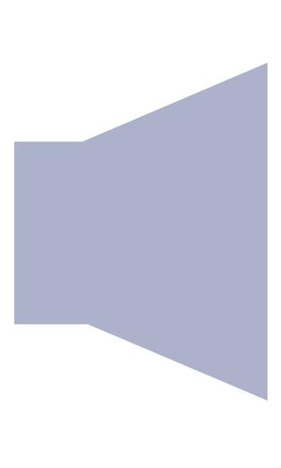
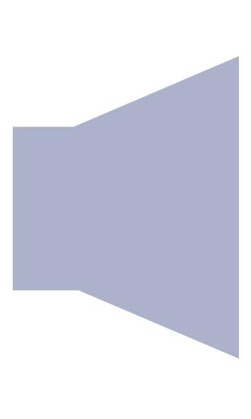

22.07.2011, Utøya
15:50

Utøya, 22.juli 2011
Den lille øya blir denne ettermiddagen fylt til randen av store følelser. Denne tidslinjen er en tolkning av vår research og handler om i hvilken grad de største følelsene var tilstede i løpet av kvelden. Gjennom å bevege deg nedover tidslinjen går du i dypet av øya og kjenner på følelseskaoset som farget øya rød.
Scroll nedover tidslinjen og opplev hendelsesforløpets følelseskaos. Klokken representerer tid og grafen med fargekodene representerer følelser. Når den lille sirkelen til høyre for midtfeltet begynner å lyse er den klikkbar, og inneholder personlige fortellinger og beskjeder tilknyttet til tidsperioden innenfor feltet. Følelsene er feflektert fra midten av siden og blir sterkere jo lengre ut de kommer. Midtfeltet som har Utøyas form avgenser spekteret. Treffer linjene ytterst på øya er følelsene på det sterkeste.


 
